Joshua
Joshua（书华，也被大家戏称为"书老汉""矮富帅""富帅腊肉"）是北航头马一位贯穿多年的老会员。2014年下半年，他以新会员身份登台，先后在第79次会议献上CC2《Magic》、在第81次会议带来CC3《Game》，被主持人称作"魅力型男""浪漫的人"——他的演讲带着一点魔法感和故事性，从一开始就给俱乐部留下了温柔而有想象力的印象。
随后他一步步走向成熟。2015年他频繁担任主持与点评：第86次会议做即兴主持，第117次会议带来CC5《A Drop of Honey（一滴蜂蜜）》并斩获Best Speaker，用一则"绝境旅人尝蜜"的寓言谈初心与责任；第118次会议他作为点评官评点Kiki，第120、121次会议主持《Challenge》等主题。2016年春他在俱乐部春季比赛中出战英文即兴，最终拿下即兴演讲比赛No.1，成为公认的即兴高手。
2016年6月第142次会议，他从前主席Kiki手中接过执行总裁的接力棒，正式当选北航头马新一任主席，就职宣誓"建设高质量的北航TMC"，并提出了属于自己的治会理念SPEC——Simple、Practical、Efficient、Creative。任内他几乎每场会议都站在台前：以主席身份开场、做即兴主持TTM、带来CC《Day Dreamers》，与Ameco TMC等俱乐部举办联合会议，把"有朋自远方来"的开放姿态带给俱乐部。他性格阳光、自带幽默感，常被会友打趣，却也是那个会喊出"你要是不去我去"、鼓励大家"嘛都憋说，大胆去追"的热心人。直到2017年底他仍回到舞台带来备稿演讲，是北航头马一位有温度、有担当的灵魂人物。
里程碑
- 2014-11-21 登台献声 ↗第79次会议带来CC2《Magic》，被称作'魅力型男''浪漫的人'。
- 2015-11-06 CC5夺得Best Speaker ↗第117次会议《A Drop of Honey》打动全场，获最佳演讲者。
- 2016-03-11 春季比赛即兴No.1 ↗在2016春季比赛英文即兴环节夺冠，成为公认即兴高手。
- 2016-06-17 当选俱乐部主席 ↗第142次会议从前主席Kiki手中接棒，就职宣誓'建设高质量的北航TMC'，提出SPEC理念。
- 2016-07-01 主席首秀 ↗第143次会议作为新主席首次主持，谈社交软件并寄望年轻人多走出去。
- 2017-12-01 再度登台 ↗第186次会议仍以备稿演讲者身份回到舞台。
闯关之路 · Competent Communication
做过的演讲 · 6 场
担任过的职务 · 俱乐部官员
担任过的会议角色
为俱乐部做的事
- 2016年6月当选北航头马主席（执行总裁），就职宣誓'建设高质量的北航TMC'。
- 提出SPEC治会理念：Simple、Practical、Efficient、Creative，作为任期方向。
- 任内几乎每场会议亲自开场、主持，组建并带领新一届officer内阁。
- 推动与Ameco TMC等外部俱乐部的联合会议，秉持'有朋自远方来'的开放交流。
- 长期担任即兴主持TTM、点评官与客座评委，扶持新人成长。
- 以即兴比赛No.1、CC5 Best Speaker等表现为俱乐部树立标杆。
照片墙 · 时间线
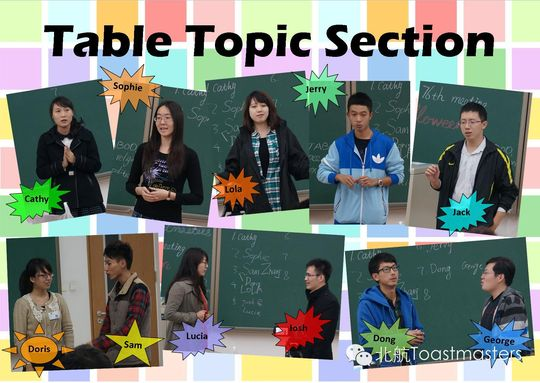
✓ ✓
✓ ✓
✓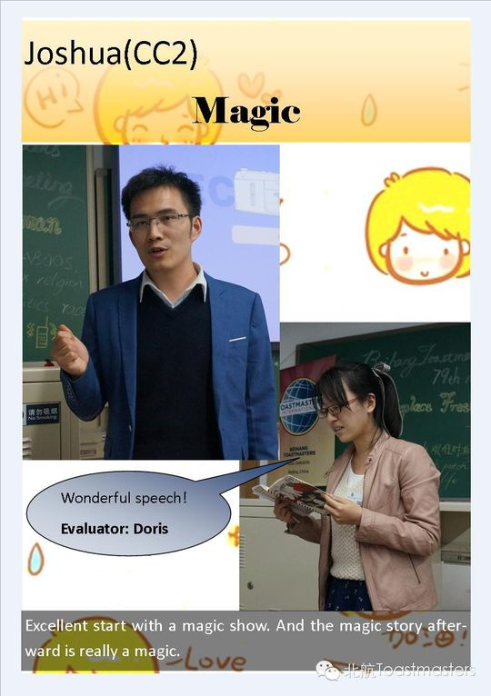
✓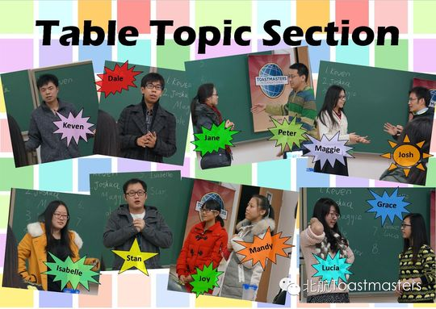
✓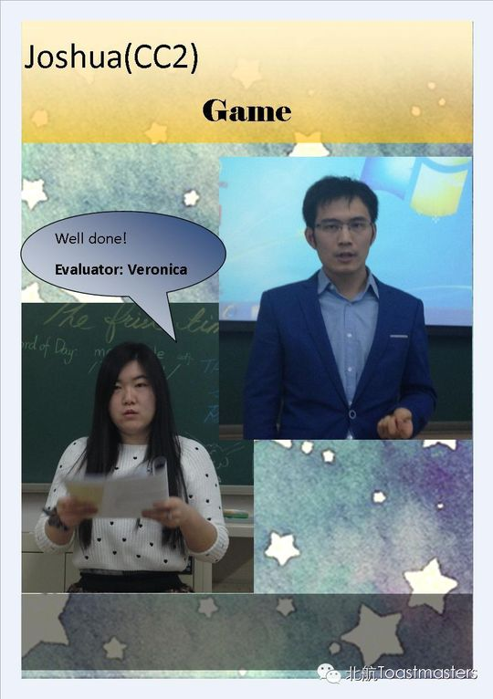
✓ ✓
✓ ✓
✓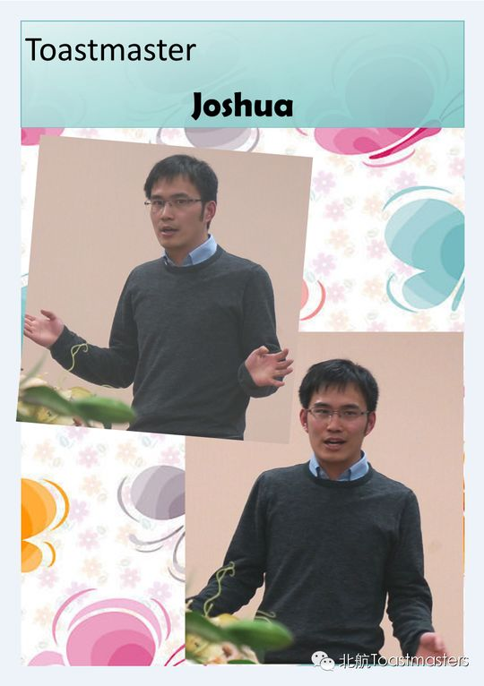
✓ ✓
✓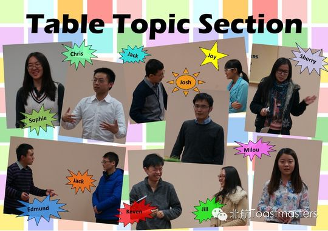
✓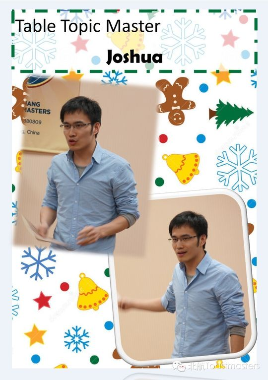
✓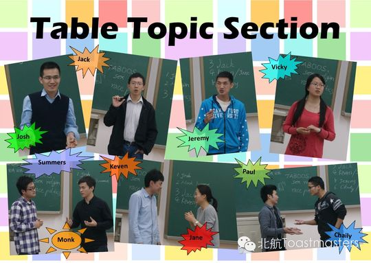
✓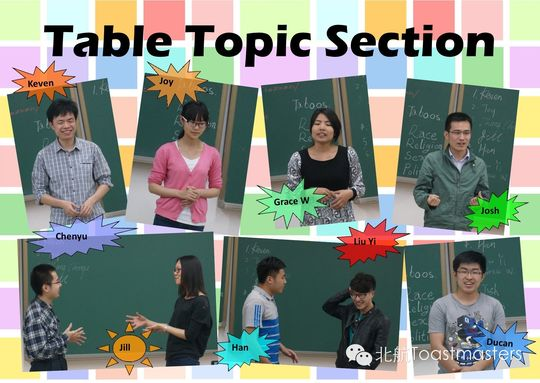
✓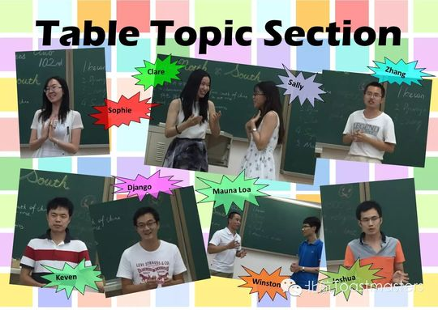
✓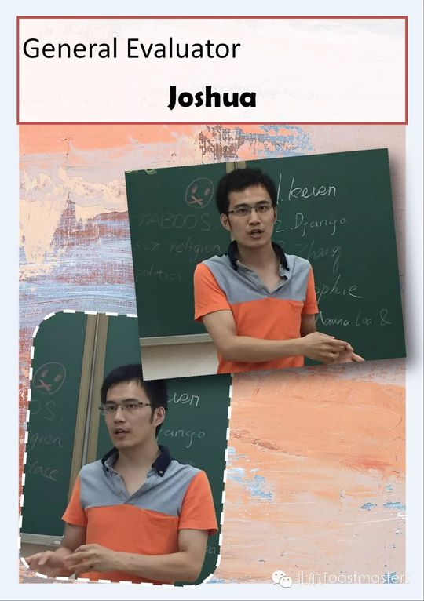
✓ ✓
✓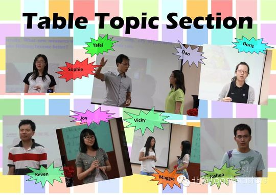
✓ ✓
✓ ✓
✓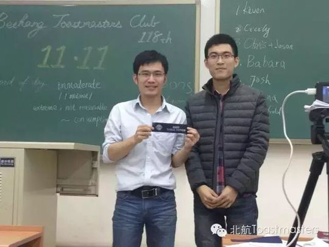
✓ ✓
✓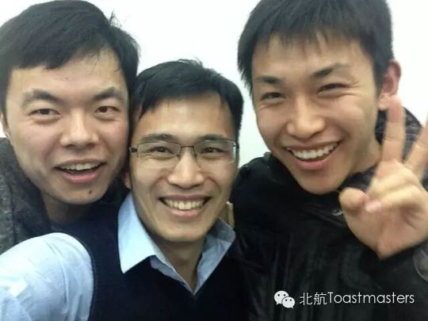
✓ ✓
✓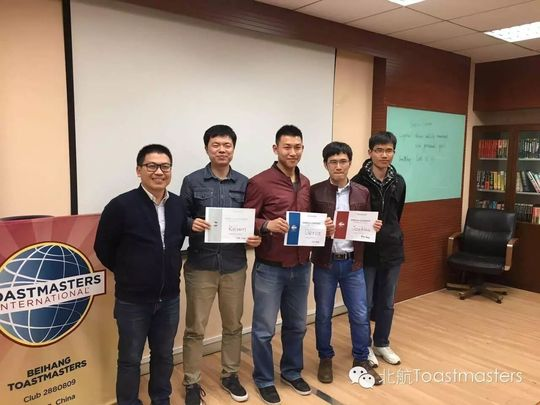
✓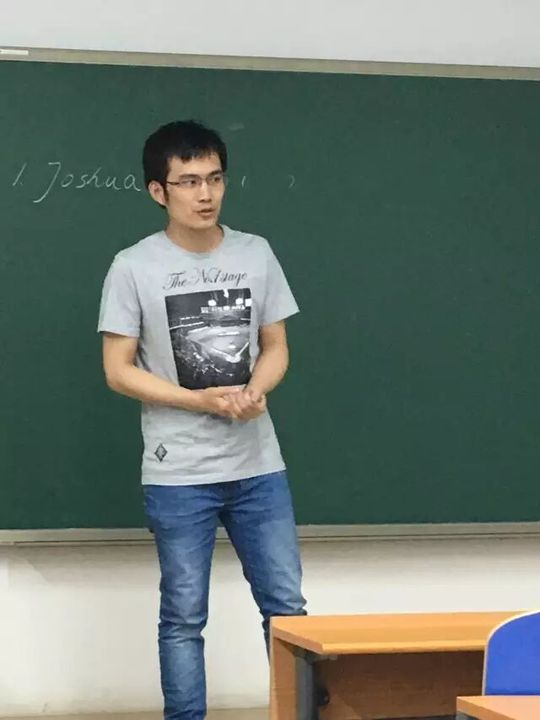
✓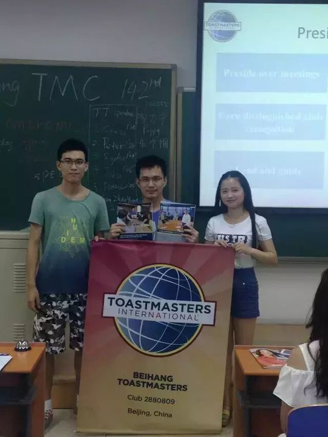
✓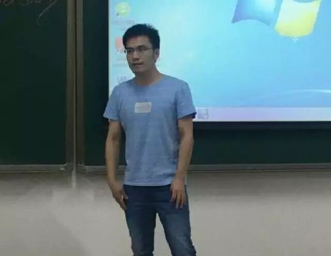
✓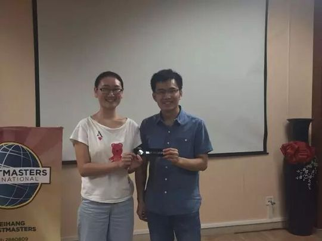
✓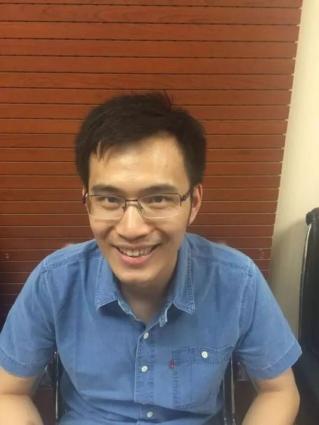
✓完整足迹 · 29 次出现（点开，每条可跳转原文）
- 2014-11-21第79次 · 演讲 Magic
- 2014-11-23第79次 · 演讲 Magic
- 2014-12-11第81次 · 演讲 Game
- 2014-12-22第81次 · 演讲 Game
- 2015-01-22第86次 · 担任Table Topic Master
- 2015-08-19第106次 · 担任比赛评委
- 2015-11-04第117次 · 会议预告：将做CC5演讲《Drop of Honey》
- 2015-11-09第117次 · 做CC5备稿演讲《A Drop of Honey》
- 2015-11-17第118次 · 点评Kiki的演讲
- 2015-12-01第120次 · 即兴演讲谈留学长见识与工作经验
- 2015-12-02第121次 · 担任121次会议TM主持人
- 2016-03-03第126次 · 即兴演讲谈家乡气候环境让人舒服
- 2016-03-10第128次 · 即兴演讲比赛选手(富帅腊肉)
- 2016-03-16第128次 · Minutes of 2016 Spring Contest@Beihang T
- 2016-04-14第133次 · HERO@Beihang TMC 133rd Meeting 19:30 Apr
- 2016-04-27聊撩@Beihang TMC 135次（中文）会议 19:30 4月29日 新主
- 2016-05-24第138次 · 520@minutes of Beihang TMC 138th Meeting
- 2016-06-14第141次 · Let’s celebrate together@minutes of Beih
- 2016-06-16第142次 · Compromise@BeihangTMC 142nd Meeting 19:3
- 2016-06-20第142次 · Compromise@minutes of BeihangTMC 142nd M
- 2016-07-04第143次 · Chat Software@minutes of Beihang TMC 143
- 2016-07-29第147次 · Superpower@BeihangTMC 147th Meeting 19:3
- 2016-10-13第155次 · Self-image@BeihangTMC 155th Meeting 19:3
- 2016-11-03第158次 · Winter@Beihang TMC158th Meeting@19:30 No
- 2016-11-24第160次 · 朋友@Beihang TMC 160th Meeting@19:30 Nov.
- 2016-12-04第161次 · "网红" @minutes of 北航 TMC 161th Meeting
- 2016-12-22第163次 · Resolution@minutes of Beihang & Ameco-TM
- 2017-12-01第186次 · Choice@Beihang TMC 186th Meeting@19:30 D
- 2019-03-17#精彩回顾#来一起看看北航头马的大佬们！